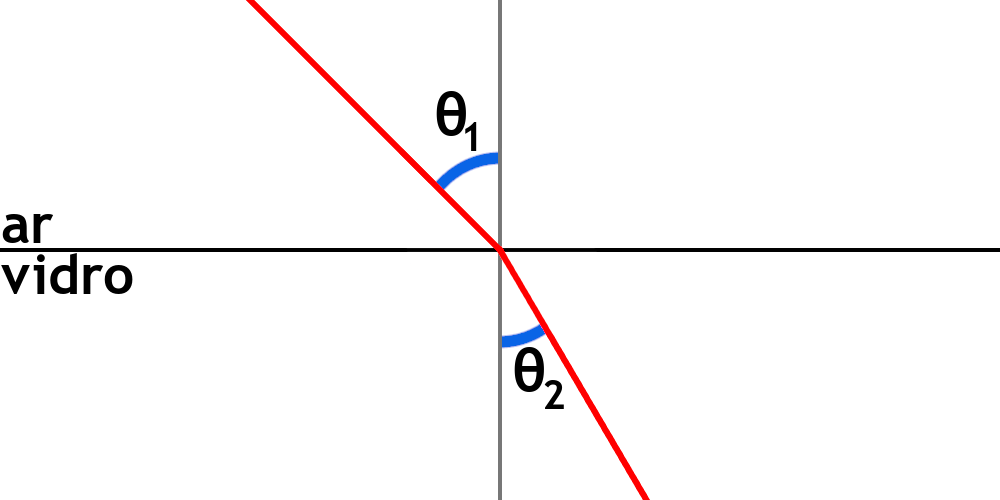

Estudar a Absorção, Reflexão, Refração e Reflexão Total da Luz.
Método
Reflexão da Luz
Começamos por apontar o laser para vários alvos diferentes, como madeira, papel, acrílico, vidro, etc., e registamos para qual dos materiais é que a luz refletida irá ter maior intensidade.
De seguida, fazemos incidir o laser nesse material, com diferentes ângulos de incidência.
Registamos os ângulos de incidência e os ângulos de reflexão, observando que irão ser iguais.
Refração da Luz
Fazemos incidir o lazer em meios transparentes diferentes, como uma placa de acrílico e um copo vidro − primeiro vazio e depois com água − e registamos para qual dos meios o feixe refratado tem maior intensidade.
Depois, colocamos uma placa de acrílico com forma de semicírculo em cima de um transferidor de 360º, fazemos incidir a luz do laser no centro da placa de acrílico e observamos que há refração da luz.
Variamos o ângulo de incidência do laser sobre a placa de acrílico e registamos os vários ângulos de incidência e de reflexão.
Finalmente, usamos uma reta de melhor ajuste e a Lei de Snell-Descartes para calcular o índice de refração da placa de acrílico:
A Lei de Snell-Descartes relaciona os índices de refração de dois meios não opacos com o ângulo com que incide a luz e com o ângulo com que será refratada:
⇔n1 × sin(θ1) = n2 × sin(θ2)
n1
→
Indíce de Refração do meio onde a luz se está a propagar
θ1
→
Ângulo de Incidência da luz na superfície que separa os meios
n2
→
Indíce de Refração do meio onde a luz se passa a propagar
θ2
→
Ângulo de Refração
Por exemplo, no caso de um raio solar que incida sobre uma superfície plana de vidro:

⇔ nar × sin(θ1) = nvidro × sin(θ2)
Como o indíce de refração do vidro é superior ao do ar, o ângulo de refração é menor que o ângulo de incidência:
⇔ nvidro > nar ⇒ sin(θ2) < sin(θ1) ⇒ θ2 < θ1
O índice de refração, n, de um material está relacionado com a velocidade da luz nesse material e é definido pela seguinte razão:
⇔n =
cv
n
→
Indíce de Refração num material
c
→
Velocidade de propagação da luz no vácuo
v
→
Velocidade de propagação da luz no material escolhido
Logo, se a luz viajar mais lentamente num determinado material, este terá um maior índice de refração. Podemos também dizer que o material é muito refringente.
Da mesma forma, se a luz viajar mais rapidamente num determinado material, este terá um menor índice de refração. Podemos também dizer que o material é pouco refringente.
Através do quociente que o define, podemos perceber que é uma grandeza adimenional e terá um valor sempre superior a 1, pois a velocidade de propagação da luz no vácuo será sempre superior ou igual à velocidade de propagação da luz num qualquer material:
Ângulo de incidência da luz na superfície do acrílico
nacrílico
→
Indíce de Refração do acrílico
θ2
→
Ângulo de refração
Ou seja, o declive da reta de melhor ajuste traçada, por regressão linear, será igual ao índice de refração do acrílico.
Reflexão Total da Luz
Se um feixe de luz se estiver a propagar num meio com maior índice de refração e incidir sobre um meio com um índice de refração menor, segundo um ângulo de incidência superior ao ângulo crítico, irá ocorrer Reflexão Total.
O ângulo crítico, θc é o ângulo de incidência para o qual o ângulo de refração é 90º.
Indíce de Refração do meio onde a luz se está a propagar
θ1
→
Ângulo de Incidência da luz na superfície que separa os meios
n2
→
Indíce de Refração do meio onde a luz se passa a propagar
θ2
→
Ângulo de Refração
θc
→
Ângulo Crítico para o par de meios escolhidos
Se a luz tiver um ângulo de incidência superior ao ângulo críticonão irá ocorrer refração, mas sim Reflexão Total.
Começamos por fazer incidir o laser sobre a superfície semicircular da placa de acrílico, de forma a que não ocorra refração nesse ponto.
De seguida, começamos a aumentar o ângulo de incidência até que deixe de ocorrer refração e passe a ocorrer reflexão total e registamos esse ângulo, que será aproximadamente igual ao ângulo crítico.
Depois, fazemos incidir o laser numa fibra ótica e verificamos que, mesmo que esta esteja encurvada, a luz irá atingir a outra ponta, visto que ocorrem várias reflexões totais da luz no seu interior.
Finalmente, repetimos o processo anterior, mas com uma mangueira cheia de água, tapada nas pontas com fita-cola transparente e observamos as sucessivas reflexões totais que se dão no seu interior.